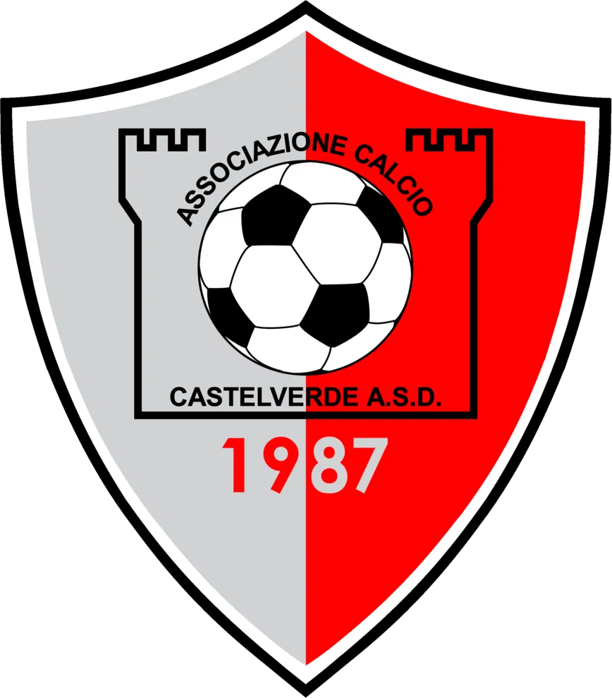
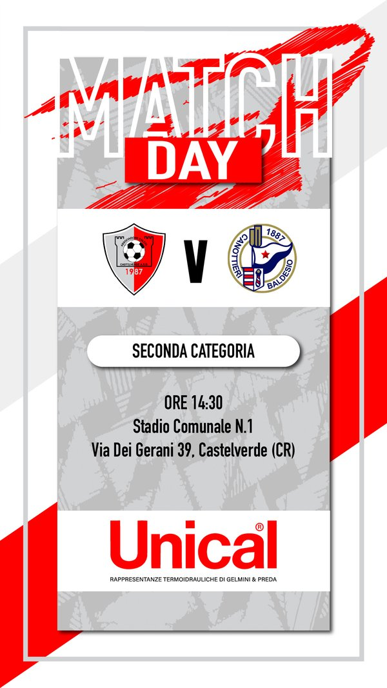
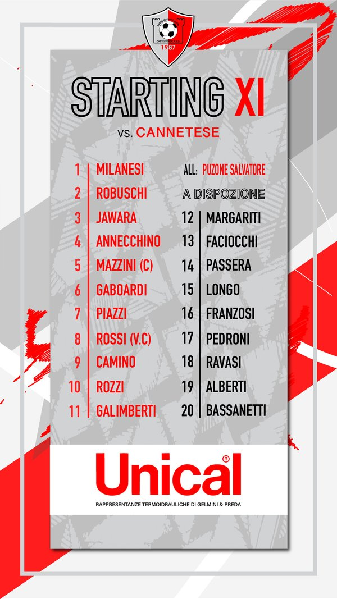
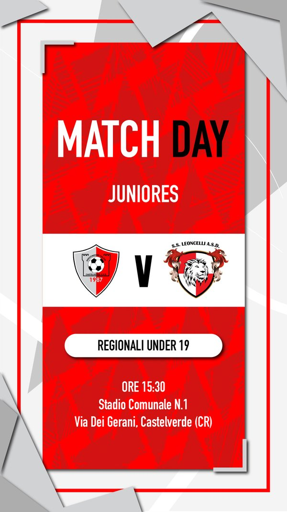

A.C. Castelverde — Associazione Calcio Castelverde, dal 1987

Ultime notizie
Tutte le notiziePartite
Stagione 2026/27
Tutte le squadre
Quattro squadre
L'attività agonistica del Castelverde: dalla Seconda Categoria agli Under 15.
Prima squadra
Seconda Categoria
Match day,
full time,
starting XI
Formazioni, risultati e grafiche di ogni partita, dalla prima squadra agli Under 15: seguici su Instagram.


